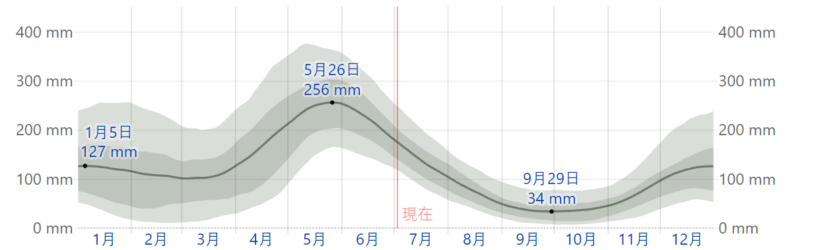
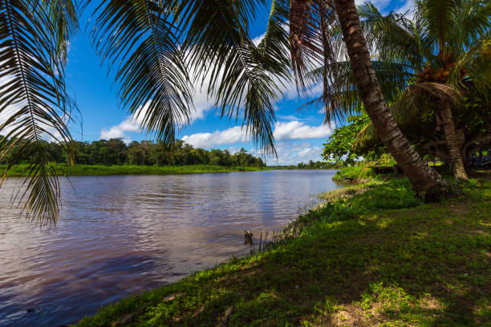
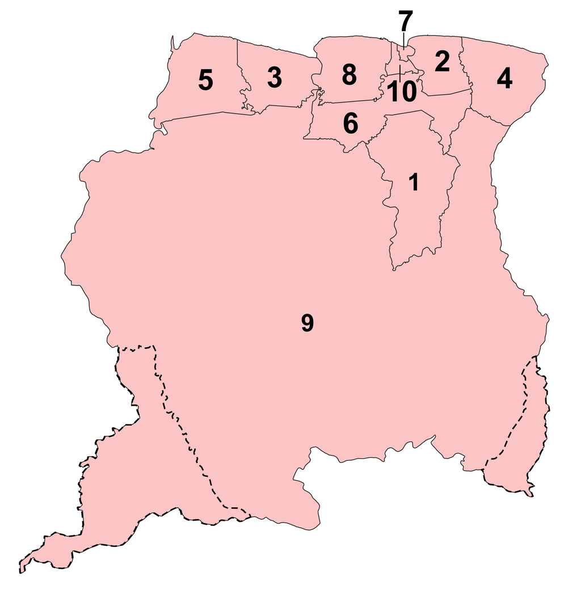
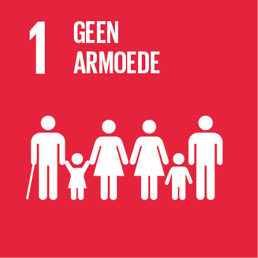
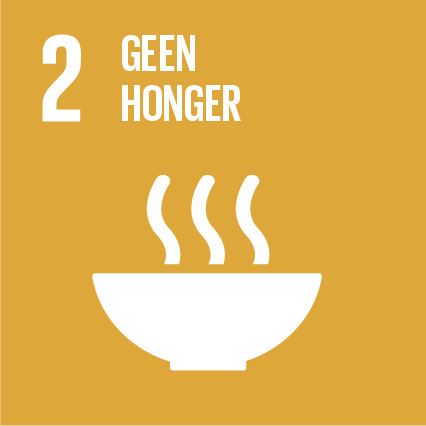
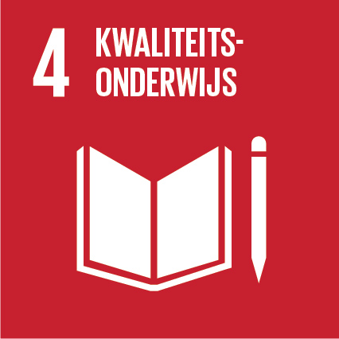
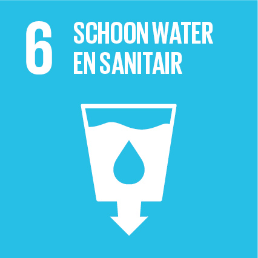
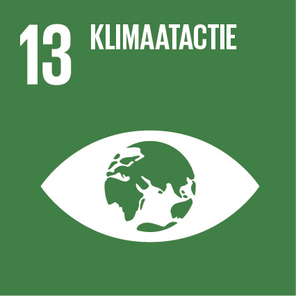

スリナム
①位置や分布 ②場所

・面積163,300キロメートル ・人口61.8万人
〇気候
〇降水量
・最も降雨の多い月は5月で平均降雨量は250mm ・最も降雨の少ない月は10月で平均降水量は37mm
〇気温
・年中暑い！！
スリナムは南米の北東部に位置し、豊かな熱帯雨林と多様な生態系を有しています。国土の約90%が熱帯雨林に覆われており、多くの動植物が生息しています。特にアマゾン熱帯雨林の一部として、スリナムの環境は生物多様性に富んでいます。
スリナムの人々は、森林伐採、鉱鉱採掘、農業などの活動を行っています。これらの活動は、自然環境に大きな影響を与えています。例えば、森林伐採は生物多様性の減少や土壌の劣化を引き起こしています。一方で、持続可能な方法での森林管理や保護活動も進められています。
スリナムでは、自然環境の保護と持続可能な発展を目指す取り組みが進められています。例えば、自然保護区の設立や、環境に配慮した農業方法の導入などが行われています。また、地域社会が環境保護に積極的に参加し、未来の世代に自然を残すための努力が続けられています。
スリナムの豊かな熱帯雨林は、気候調整や生物多様性の保護に重要な役割を果たしています。森林の減少や環境変化は、地域社会や経済に直接的な影響を与えます。例えば、鉱鉱採掘は環境に影響を与え、その結果、地元の生態系や住民の生活にも影響を及ぼします。
スリナムの経済は主に鉱鉱資源（特にボーキサイト）や農業（主に米やカカオ）に依存しています。これらの資源の採掘や生産は、地域経済だけでなく、国内外の市場とも密接に関連しています。経済的な変動が地域間の関係にどのように影響するかは重要な問題です。
スリナムの社会は多様な民族グループから成り立っており、これらのグループ間での相互作用が社会の安定性に影響を与えます。文化的、言語的な相互作用は地域間の関係に影響を及ぼし、地域の社会的な統合や紛争解決に寄与しています。
スリナムのインフラ（道路、港、空港など）は、地域間のアクセスを向上させ、経済的な相互依存を促進します。交通網の発展は、物資やサービスの流通に重要な役割を果たし、地域経済の発展に寄与しています。
スリナムの空間的相互依存作用を理解することは、持続可能な開発や地域の安定性を確保するために重要です。このような知識は、政策決定や地域振興の計画において有用だと思った。
スリナムは、北にカリブ海、東にフランス領ギアナ、南にブラジル、西にガイアナと接しています。国土の大部分は熱帯雨林で覆われており、豊かな生物多様性があります。
↑スリナムの地図
スリナムは10の地域に分かれています。それぞれの地域は行政的に独立しており、地域ごとに異なる特徴や文化を持っています。主な地域には以下があります：
スリナムの主要な都市には、首都のパラマリボ（Paramaribo）があります。パラマリボは商業と行政の中心地であり、多文化的な都市です。その他の重要な都市には、ヌニ（Nickerie）やブラカマス（Brokopondo）などがあります。
スリナムは多民族国家であり、様々な文化や宗教が共存しています。主な民族グループには、ヒンドゥー教徒、ムスリム、キリスト教徒、アフリカ系、先住民などがあります。これにより、スリナムには豊かな文化的遺産と多様な伝統があります。
〇スリナムは貧困削減のために、教育や職業訓練の機会を増やし、経済成長を促進しています。
〇農業の発展と食糧安全保障の強化を通じて、飢餓を減少させるための施策を進めています。
〇教育制度の改善とアクセスの向上を図り、質の高い教育を全ての人々に提供する努力をしています。
〇水の供給と衛生状態の改善を目指し、安全な水とトイレの普及に取り組んでいます。
〇気候変動への対応として、再生可能エネルギーの導入や環境保護政策を推進しています。
